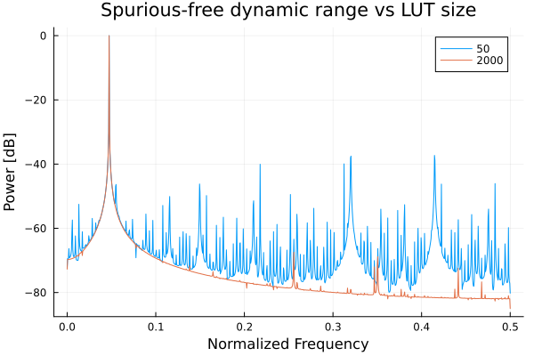
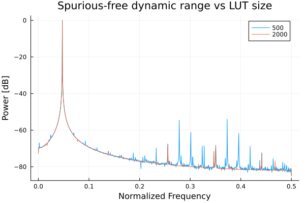

Dynamic Range
Lets see what dynamic range we can achieve with LUTs of different sizes. We'll assume that the signal will be generated on a 12-bit DAC.
using ..SineTables
using Plots
using DSP
# Create a sine lookup table with integer
sine_table_50 = create_sine_table(
Int16, # LUT type
50, # Number of pints in a quarter sine'
0, # Bias
2047 # Scaling
)
# Create a sine lookup table with integer
sine_table_100 = create_sine_table(
Int16, # LUT type
100, # Number of pints in a quarter sine'
0, # Bias
2047 # Scaling
)
sine_table_500 = create_sine_table(
Int16, # LUT type
500, # Number of pints in a quarter sine'
0, # Bias
2047 # Scaling
)
sine_table_2000 = create_sine_table(
Int16, # LUT type
2000, # Number of pints in a quarter sine'
0, # Bias
2047 # Scaling
)
sine_50 = [lut_sine(sine_table_50, 2 * pi * i / 21.12) for i in 0:8192]
plot(sine_50[1:127], linetype = [:steppre], label = "Sine")
sine_100 = [lut_sine(sine_table_100, 2 * pi * i / 21.12) for i in 0:8192]
sine_500 = [lut_sine(sine_table_500, 2 * pi * i / 21.12) for i in 0:8192]
sine_2000 = [lut_sine(sine_table_2000, 2 * pi * i / 21.12) for i in 0:8192]
nothingWe repeat the sine period a couple of times to achieve better resolution in our periodogram.
Now lets compare the signals.
periodogram_50 = DSP.Periodograms.welch_pgram(sine_50, 2048, fs=1)
periodogram_100 = DSP.Periodograms.welch_pgram(sine_100, 2048, fs=1)
periodogram_500 = DSP.Periodograms.welch_pgram(sine_500, 2048, fs=1)
periodogram_2000 = DSP.Periodograms.welch_pgram(sine_2000, 2048, fs=1)
# Normalize the power
normalized_power(pgram) = pow2db.(pgram.power ./ maximum(pgram.power))
plot(periodogram_50.freq, normalized_power(periodogram_50), reuse = false, label="50")
plot!(periodogram_50.freq, normalized_power(periodogram_2000), reuse = false, label="2000")
plot!(xlabel="Frequency [Hz]", ylabel="Power [dB/Hz]", title="Spurious-free dynamic range vs LUT size")The plot below shows the normalized dynamic range resulting from tables of different length. As we see, the harmonics decrease with increasing table length.

Due to the high number of spurs in the smaller tables, we have separated the results in two plots.
#plot(periodogram_50.freq, normalized_power(periodogram_50), reuse = false, label="50")
#plot(periodogram_50.freq, normalized_power(periodogram_100), reuse = false, label="100")
plot(periodogram_50.freq, normalized_power(periodogram_500), reuse = false, label="500")
plot!(periodogram_50.freq, normalized_power(periodogram_2000), reuse = false, label="2000")
plot!(xlabel="Frequency [Hz]", ylabel="Power [dB/Hz]", title="Spurious-free dynamic range vs LUT size")